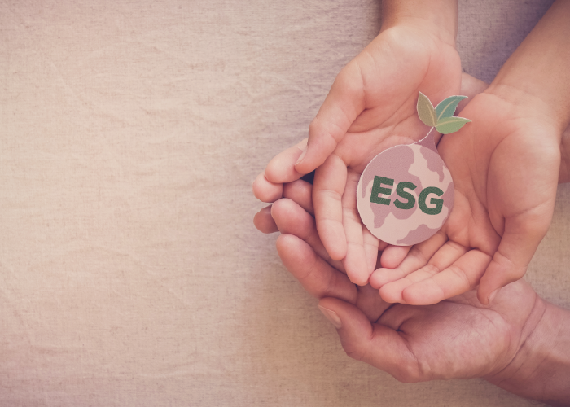
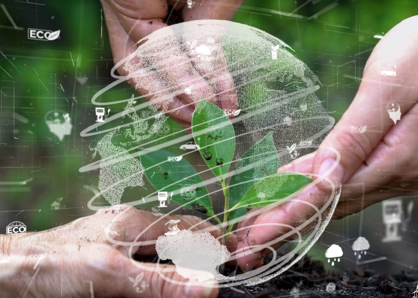

경영이념고객의 마음 속에 First, JT저축은행 JT의 가치 ESG경영 윤리경영 브랜드(CI) 전체 Environment Social Govemance JT저축은행 업계 최소 사무용품 녹색제품 전환시행 JT저축은행이 ESG경영의 일환으로 기업 사무용품 일부를 녹색제품으로 전환 시행하였습니다.2022.04.11  JT저축은행, 업계 최초 영업용 차량'친환경 전기차'로 전환 JT저축은행의 영업용 차량을 업계를 선두하여 친환경 전기차로 전환하였습니다.2022.04.11  JT저축은행, 그린가드 사무가구 구매로 친환경 업무공간 조성 T저축은행은 사무가구 구매를 통한 친환경 업무공간 조성을 위해 사무용 의자를 그린가드(Green Guard)인증 친환경 제품으로 교체했습니다. 교체 후 기존 사무용 의자 150여 개는 성남 지역 내 재활용센터 성남시리사이클센터에 무료 기탁하였습니다.2022.04.11 1 2 3 ESG경영에 대한 고객님의 소중한 의견을 남겨주세요 홍길동 님 sdasdas 확인